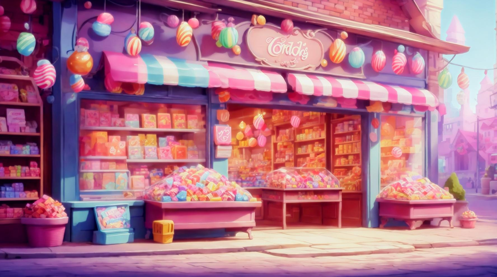
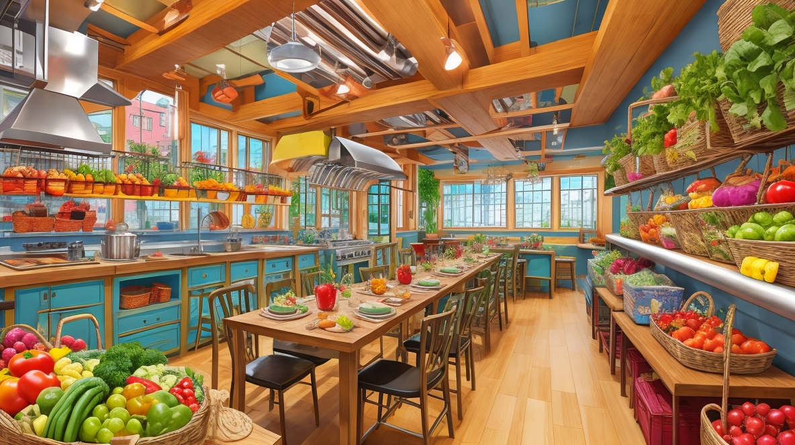
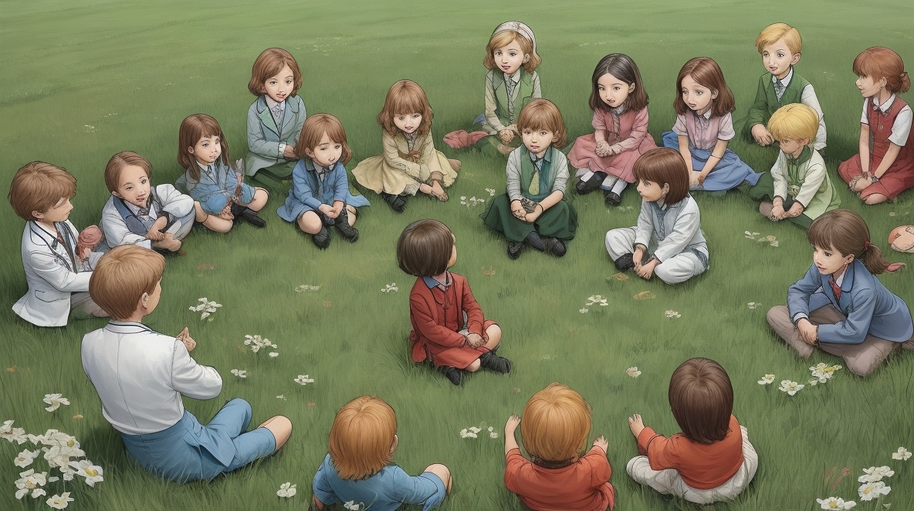

Once upon a time, nestled between rolling hills and lush green fields,


Life in Greenleaf was simple yet joyful until one fateful day when a mysterious stranger arrived in the village. With a flick of his wand, he transformed an old, dusty corner into a magical candy store.
The children of Greenleaf were enchanted by the colorful candies and the sparkles that danced in the air.
Slowly but surely, they began to indulge in the sugary delights, trading their wholesome garden snacks for candies of various shapes and hues.

As time passed, the once lively streets of Greenleaf grew silent. The laughter of children was replaced by the sound of sniffles and coughs. The village, once brimming with vitality, now witnessed long lines outside the hospital, filled with sickly children. Even the older folks were puzzled by this sudden change.

Concerned mothers of Greenleaf came together, determined to bring back the joy and health of their village. They gathered baskets of fresh fruits and vegetables, and with love and care, they whipped up delectable treats like strawberry cakes, berry marshmallows, and other wholesome delights.

The village doctor, wise and kind, called upon all the children to gather around her. With gentle patience, she explained the harmful effects of too much sugar and why the natural sweetness of fruits was a better choice. She taught them about the difference between the processed sugars found in candies and the natural sugars found in fruits, and how the latter nourished their bodies and kept them strong and energetic.

Eagerly, the children sampled the mouthwatering treats prepared by their mothers. With each bite, they rediscovered the joy of healthy eating, the burst of flavors dancing on their tongues. Slowly but surely, the village of Greenleaf returned to its former glory. The children grew healthier, their energy levels soared, and laughter once again filled the air.

And so, in the village of Greenleaf, the magical candy store disappeared into the mists of memory, replaced by the colorful bounty of nature's own candy. With each passing day, the people of Greenleaf lived happily ever after, cherishing the gift of health and happiness that blossomed from their own gardens.

You finished the story.
It's time for a Quiz !